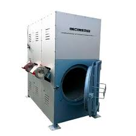
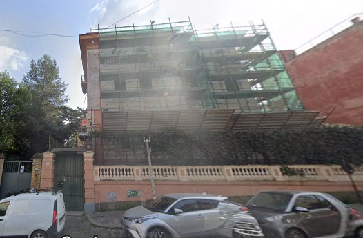
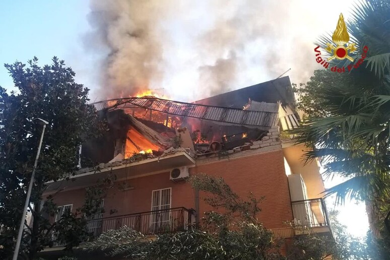

Esplosione Notturna a Roma: Indagini in Corso - Un'esplosione ha scosso la tranquillità della notte in Via dei Villini, nel cuore della capitale. Intorno alle 02:00, i residenti sono stati svegliati da un forte boato proveniente da una villetta unifamiliare al numero 28. Le fiamme hanno rapidamente avvolto l'edificio, lasciando dietro di sé solo macerie. Le prime indagini suggeriscono che l'incidente possa essere stato causato da un malfunzionamento dell'impianto di incenerimento dello studio di medicina legale adiacente. Fortunatamente, il Dottor Vitali, proprietario della villetta e responsabile dello studio, non era presente al momento dell'incidente. La procura ha aperto un'indagine per accertare le cause dell'esplosione e per verificare la conformità dell'impianto con la legge 81/08 e successive modifiche ed integrazioni. Il Dottor Vitali è al centro delle indagini. La sua assenza dal luogo dell'esplosione solleva interrogativi, ma allo stesso tempo, il suo ruolo di supervisore dell'impianto di incenerimento lo rende una figura chiave per comprendere le dinamiche dell'accaduto. Il Dottor Vitali ha fornito la sua piena collaborazione alle autorità, condividendo informazioni dettagliate sul funzionamento e la gestione dell'impianto. Le indagini sono ancora in corso e si attendono ulteriori sviluppi nelle prossime ore. Questo incidente deve fornire da promemoria sulla sicurezza degli impianti ad alto rischio e sulla necessità di rigorosi controlli e manutenzioni.
  